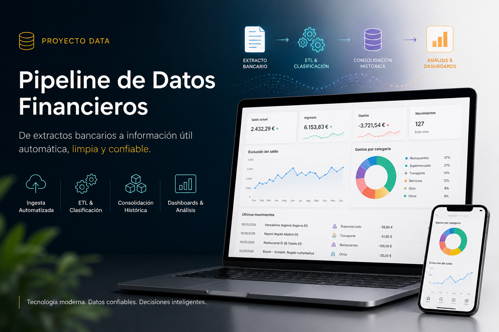
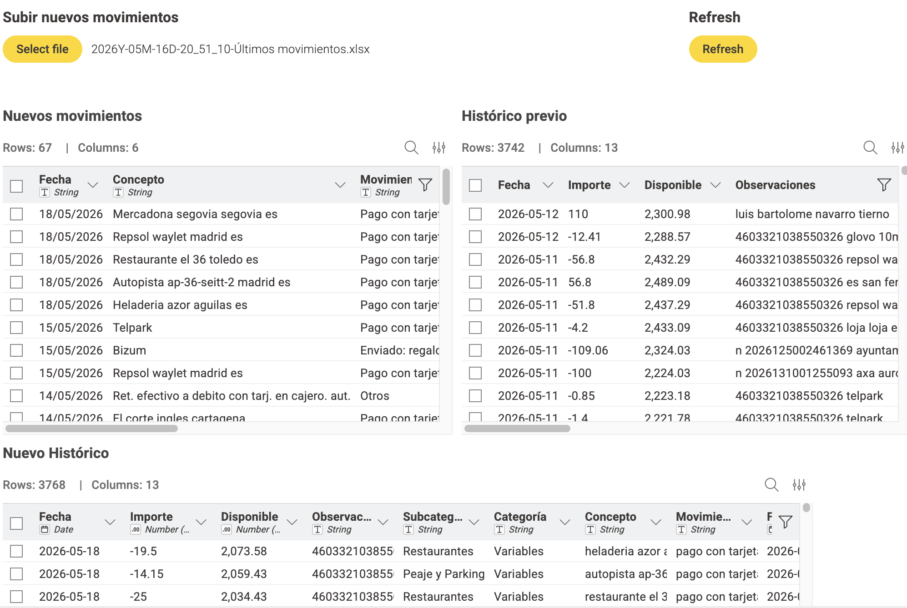
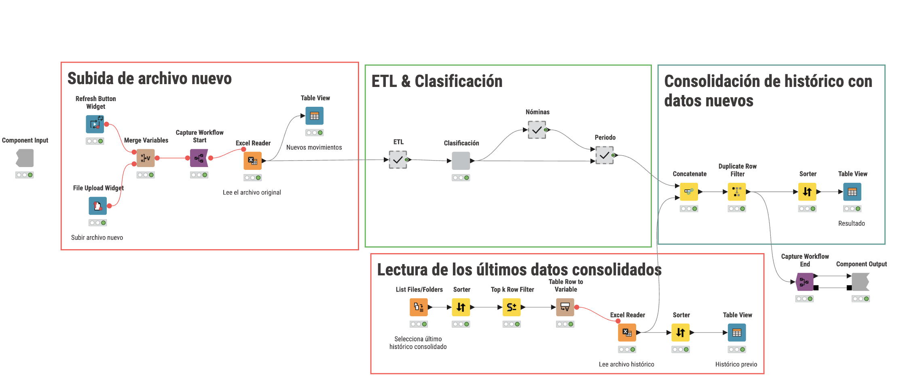

Proyecto ETL desarrollado en KNIME y explotado en Databricks para transformar extractos bancarios en información financiera útil, trazable y accionable.

Objetivo principal: automatizar y optimizar el control financiero doméstico mediante un sistema capaz de importar extractos bancarios, limpiar los datos, clasificarlos, asignarlos a periodos financieros reales y generar una base histórica reutilizable para análisis mensual e histórico.
El proyecto emplea KNIME Analytics Platform como motor principal de integración y transformación de datos, y Databricks como capa de almacenamiento analítico y visualización cloud. El flujo actual no se limita a visualizar gastos: estructura un proceso ETL completo que convierte movimientos bancarios dispersos en información financiera coherente, comparable y preparada para la toma de decisiones.
El proyecto se encuentra en una versión funcional avanzada, en continua evolución, con mejoras orientadas a la robustez del flujo, la reutilización de componentes, la carga de datos en entorno cloud y la explotación posterior mediante dashboards interactivos en Databricks.
La solución se organiza como un pipeline de procesamiento financiero, desde la entrada de datos hasta la generación de información analítica:
Esta arquitectura permite separar claramente la preparación de datos, la lógica de negocio, el almacenamiento analítico y la visualización. De esta forma, KNIME concentra la automatización del proceso ETL, mientras que Databricks permite centralizar el histórico y consultar los resultados desde dashboards publicados en la nube.
Inicialmente, el proyecto se desarrolló como una solución local de automatización y visualización financiera. Actualmente, ha evolucionado hacia una arquitectura híbrida: KNIME actúa como motor ETL y Databricks como plataforma de almacenamiento, consulta y visualización analítica.
Este cambio permite desacoplar el procesamiento de datos de la capa visual, mejorar la escalabilidad del sistema y acceder al dashboard desde cualquier dispositivo sin depender de una ejecución local.
El proyecto ha sido desarrollado mediante módulos reutilizables dentro de KNIME, lo que permite evolucionar cada parte del sistema sin comprometer el conjunto. Entre los componentes principales destacan:
El sistema permite analizar los datos desde dos enfoques complementarios:
Además, se han integrado objetivos financieros personalizados alineados con la regla 50/30/20: 50% en gastos fijos, 30% en gastos variables y 20% en ahorro. Esta referencia permite comparar cada periodo con un marco de salud financiera sencillo y accionable.
La lógica de periodificación por nómina aporta una visión más realista que el análisis por meses naturales, especialmente cuando los ingresos se reciben a final de mes o cuando existen varios ingresos relevantes dentro de un mismo intervalo.
Antes de automatizar este proceso, cada análisis mensual requería revisar manualmente todos los movimientos, categorizarlos uno a uno y consolidarlos en múltiples hojas de cálculo. Este proceso era lento, propenso a errores y difícil de replicar con coherencia mes a mes.
Gracias a esta solución, el análisis financiero doméstico se ha convertido en un proceso mucho más ágil, trazable y consistente. La automatización reduce el trabajo repetitivo, mejora la calidad del histórico y facilita comparar periodos con criterios homogéneos.
El resultado no es únicamente un ahorro de tiempo, sino una base de datos financiera personal más fiable, capaz de soportar análisis de desviaciones, simulaciones de nuevos gastos, seguimiento de objetivos y detección temprana de patrones de gasto poco saludables.
A continuación se puede ver cómo se estructura el proyecto internamente y algunos de los resultados visuales obtenidos.

Subida de nuevos movimientos: vista de control utilizada al incorporar un nuevo extracto bancario. Permite revisar los movimientos que se van a añadir, comparar el archivo con el histórico existente y previsualizar cómo quedará el nuevo histórico antes de consolidarlo.

Flujo general: representación completa del pipeline financiero desarrollado en KNIME. El flujo se divide en cuatro bloques principales: subida del nuevo extracto bancario, ETL y clasificación automática, lectura del último histórico consolidado y consolidación final de los nuevos movimientos con el histórico existente.
La arquitectura incorpora controles de duplicados, identificación automática de nóminas, asignación de periodos financieros y actualización incremental del histórico maestro antes de cargar los datos en Databricks para su explotación analítica.
El resultado es un sistema de análisis financiero personal que combina automatización, trazabilidad, almacenamiento analítico y visualización cloud. Los paneles de mando, actualmente desplegados en Databricks, permiten interpretar el comportamiento mensual e histórico, detectar desviaciones, evaluar la estabilidad de los gastos y tomar decisiones con una base de datos más consistente.